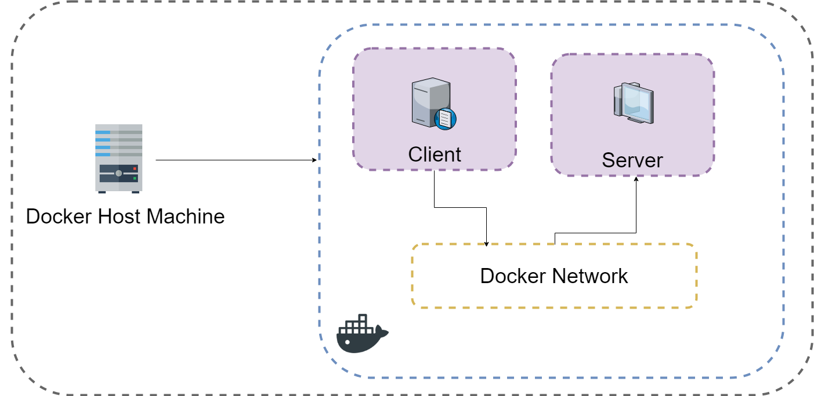
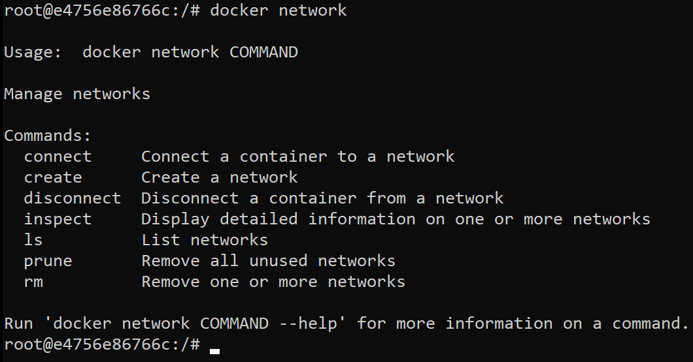
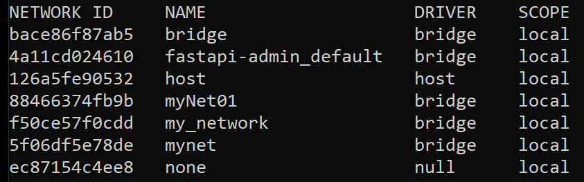
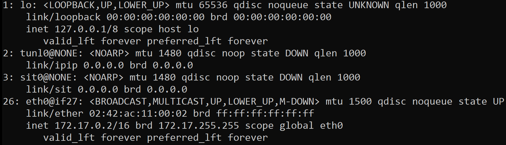
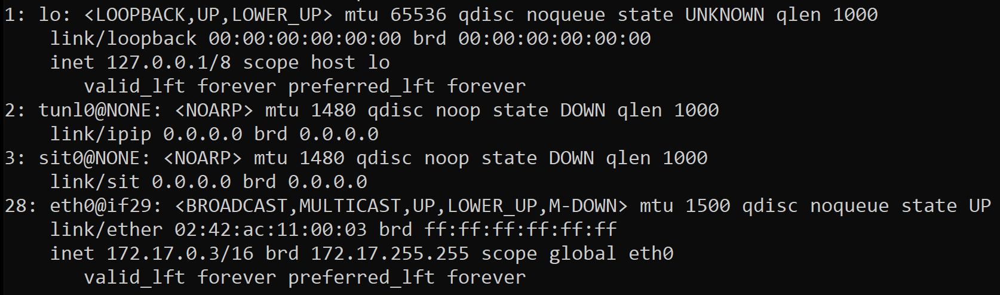

Концепция сети в Docker¶
Познакомимся с тем, как объединять несколько контейнеров в сеть Docker¶
Сеть Docker в основном используется для установки связи между контейнерами Docker и внешним миром через хост-машину. Также можно сказать, что это коммуникационный канал, через который все изолированные контейнеры взаимодействуют друг с другом в различных ситуациях для выполнения необходимых действий.
Перед тем как приступить к основной части материала, закрепим некоторые базовые принципы, термины и определения относительно работы сетей, чтобы избежать противоречий и ошибочного восприятия.
Сети: вводная часть¶
Что такое сеть?¶
Локальная сеть (Local Area Network, LAN) — объединение компьютеров, сосредоточенных на небольшой территории. В общем случае локальная сеть представляет собой коммуникационную систему, принадлежащую одной организации: школа, университет, больница, банк и т.д. При построении сети используют следующие компоненты:
Оконечные узлы: устройства, которые передают и/или принимают какие-либо данные. Это могут быть смартфоны, компьютеры, телевизоры, сервера, различные терминалы приема оплаты. Например: метро, сотовая связь, услуги ЖКХ и и т.д.
Промежуточные устройства: это устройства, которые соединяют оконечные узлы между собой. Сюда можно отнести коммутаторы, концентраторы, модемы, маршрутизаторы, точки доступа Wi-Fi, базовые станции мобильных операторов.
Сетевые среды: это те среды, в которых происходит непосредственная передача данных. Сюда относятся проводные кабели (например, Ethernet), сетевая карта вашего компьютера. Если это кабель, то передача данных осуществляется при помощи электрических сигналов. У оптоволоконных кабелей, при помощи световых импульсов, и радиоволны в случае использования беспроводной среды (WiFi, Bluetooth, LoRa и др.).
Следующее, что нам надо знать — это порт и протокол.
Порт — это цифра. Например, 21, 22, 25, 80, 433, 8080. Это число записывается в заголовках протоколов транспортного уровня (об этом ниже). Порт указывает, для какой программы предназначен тот или иной пакет (информация, передаваемая одним приложением другому). Например, http-сервер работает через порт 80. Когда вы открываете браузер, вы отправляете запрос на веб-сервер через 80 порт, и сервер понимает, что это http-запрос и вам нужен сервер, который передаст вам страницу в формате html (ответ сервера).
Протокол. Например, TCP/IP — это адрес узла (компьютера) с указанием порта и передаваемых данных. Чтобы передать информацию по протоколу TCP/IP, нужно указать следующие данные:
Адрес отправителя (Source address):
IP: 82.146.49.11
Port: 2049
Адрес получателя (Destination address):
IP: 195.34.32.111
Port: 53
Данные пакета:
Send test message
Благодаря этим данным информация будет передана на нужный узел. По такому принципу формируется клиент-серверная передача данных.
Клиент — это модуль, предназначенный для формирования и передачи сообщений-запросов к ресурсам удаленного компьютера от разных приложений с последующим приемом результатов из сети и передачей их соответствующим приложениям.
Сервер — это модуль, который постоянно ожидает прихода из сети запросов от клиентов и, приняв запрос, пытается его обслужить, как правило, с участием локальной ОС; один сервер может обслуживать запросы сразу нескольких клиентов (поочередно или одновременно).

Объяснение работы сетей в контейнерах Docker¶
В зависимости от установленных версий Docker и операционной системы (ОС) на вашем компьютере, в редких случаях работа с сетью может отличаться. Рекомендуем использовать Docker последней стабильной версии, чтобы избежать возможных ошибок. Все команды, перечисленные в текущем документе, протестированы в ОС Linux дистрибутива Ubuntu с правами root (суперпользователь).
Для управления сетевыми операциями, такими как создание новой сети, подключение контейнера к сети, отключение контейнера от сети, перечисление доступных сетей, удаление сетей и т. д., мы используем следующую команду: docker network.

Типы сетевых драйверов Docker¶
Чтобы получить список всех ваших сетей, запустите docker network ls.

Кратко познакомимся с их описанием.
Bridge network: при запуске Docker автоматически создается сеть типа мост по умолчанию. Недавно запущенные контейнеры будут автоматически подключаться к нему. Вы также можете создавать пользовательские настраиваемые мостовые сети. Пользовательские мостовые сети превосходят сетевые мосты по умолчанию.
Host network: удаляет сетевую изоляцию между контейнером и хостом Docker и напрямую использует сеть хоста. Если вы запускаете контейнер, который привязывается к порту 80, и вы используете хост-сеть, приложение контейнера доступно через порт 80 по IP-адресу хоста. Это означает, что вы не сможете запускать несколько веб-контейнеров на одном хосте, на одном и том же порту, так как порт теперь является общим для всех контейнеров в сети хоста.
None network: в сети такого типа контейнеры не подключены ни к одной сети и не имеют доступа к внешней сети или другим контейнерам. Итак, эта сеть используется, когда вы хотите полностью отключить сетевой стек в контейнере.
Overlay network: создает внутреннюю частную сеть, которая охватывает все узлы, участвующие в кластере swarm. Таким образом, оверлейные сети облегчают обмен данными между сервисом Docker Swarm и автономным контейнером или между двумя автономными контейнерами на разных демонах Docker.
Macvlan network: некоторые приложения, особенно устаревшие приложения, отслеживающие сетевой трафик, ожидают прямого подключения к физической сети. В такой ситуации вы можете использовать сетевой драйвер Macvlan для назначения MAC-адреса виртуальному сетевому интерфейсу каждого контейнера, что делает его физическим сетевым интерфейсом, напрямую подключенным к физической сети.
Познакомимся с сетями Bridge и Host на практике¶
Сеть типа Bridge Будем использовать два контейнера с ОС Alpine для объяснения этого типа сети. Для удобства в качестве имен контейнеров будем использовать короткие названия.
Первый контейнер назовем: C1.
Второй контейнер назовем: C2.
Чтобы запустить наши тестовые Docker контейнеры с образом Alpine, используем следующие команды:
# docker run -it -d --name c1 alpine ash
# docker run -it -d --name c2 alpine ash
Далее давайте выясним IP-адреса этих запущенных контейнеров. Для этого выполним следующие команды:
# docker exec -it c1 sh –c “ip a”
# docker exec -it c2 sh –c “ip a”
Результаты выполнения первой и второй команды представлены на рисунках.

Рисунок 1 — Отображение IP-адреса первого контейнера С1
 Рисунок 2 — Отображение IP-адреса первого контейнера С1
Как видите, IP-адрес контейнера C1 — 172.17.0.2, а IP-адрес C2 — 172.17.0.3.
Теперь продолжим наше знакомство с сетевыми утилитами и попытаемся проверить их связь друг с другом. Для этого будем использовать команду ping, чтобы убедиться в том, что они могут обращаться друг к другу. Для начала подключимся к контейнеру C1 командой docker attach c1 и проверим связь с контейнером C2. Для этого выполним команды:
# docker attach c1
# Ping –c 2 172.17.0.3
Как вы можете видеть на скриншотах, показанных выше, происходит коннекшн между контейнерами в одной сети. Мы также можем проверить сеть типа мост с помощью команды: docker network inspect bridge. Приведенная команда отобразит всю информацию о сети, такую как тип сети, подсеть, шлюз, имя контейнера и IP-адрес и т.д.
Создание пользовательской Bridge сети¶
При запуске Docker автоматически создается сеть bridge по умолчанию. Все вновь запущенные контейнеры будут автоматически подключаться к ней. Однако вы также можете создавать пользовательские мостовые сети. Чтобы создать новый сетевой драйвер, просто запустите: docker network create my_net или docker network create --driver bridge dhruv_net.
Обе команды будут выполнять одинаковую работу. Если вы не укажете имя драйвера, сеть будет создана в сетевом драйвере по умолчанию, т.е. bridge.
В пользовательских сетях, таких как dhruv_net, контейнеры могут не только связываться по IP-адресу, но также могут преобразовывать имя контейнера в IP-адрес. Эта возможность называется автоматическим обнаружением службы.
Чтобы убедиться, что контейнеры могут взаимодействовать друг с другом, давайте запустим три alpine контейнера, а именно, A1, A2 и A3 в сети dhruv_net, которую мы создали ранее.
docker run -it -d --name A1 --network dhruv_net alpine ash
docker run -it -d --name A2 --network dhruv_net alpine ash
docker run -it -d --name A3 --network dhruv_net alpine ash
Теперь попробуйте подключиться к любому из контейнеров и пропинговать два других, используя имя контейнера.
Из приведенных выше снимков экрана доказано, что контейнеры могут общаться друг с другом.
Хостовая Сеть Мы запускаем контейнер, который привязывается к порту 80, используя хост-сеть, приложение контейнера доступно через порт 80 по IP-адресу хоста.
Сеть типа Host нужна только тогда, когда вы запускаете программы с очень специфической сетью.
Приложения, работающие внутри контейнера Docker, выглядят так, как будто они работают на самом хосте с точки зрения сети. Это позволяет контейнеру получить больший доступ к сети, чем он может получить.
Здесь мы использовали команду netstat -ntlp для отображения порта прослушивания на сервере.
Мы рассмотрели только основы сетевых концепций Docker. Для более подробной информации предлагаем вам заглянуть в руководство по работе с сетями Docker, которое прилагается ниже. https://docs.docker.com/v17.09/engine/userguide/networking/#exposing-and-publishing-ports